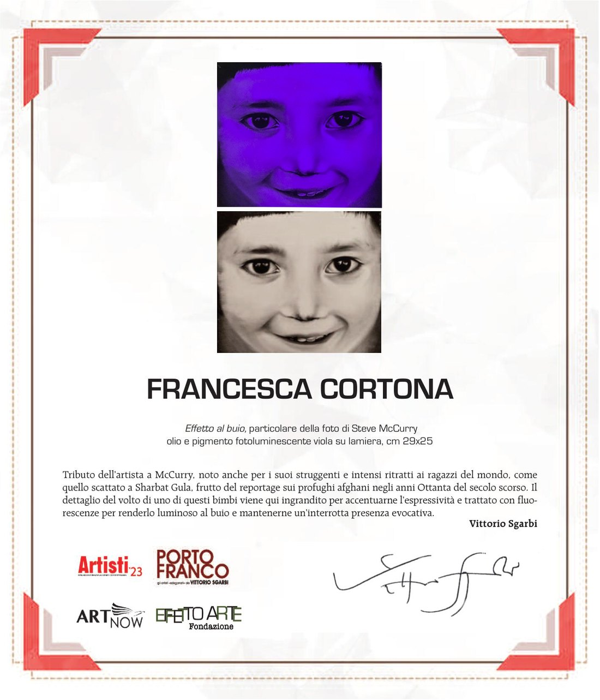

ART NOW · 2023
Citazioni Visive
par Sandro Serradifalco
Lire l'article«L'Art de Cortona se distingue par l'usage des pigments luminescents, un outil qui génère la Lumière dans l'obscurité.»
— CRITIQUE D'ART
«Un réseau complexe de symboles, de matière chromatique et d'énergie évocatrice traverse les œuvres picturales de Francesca Cortona.…»
— CITAZIONI VISIVE — ART NOW
«Hommage de l'artiste à McCurry : le détail du visage d'un enfant est agrandi pour en accentuer l'expressivité et traité avec des fluorescences pour le rendre lumineux dans l'obscurité, en conservant une présence évocatrice ininterrompue.…»
— VITTORIO SGARBI
ART NOW · 2023
par Sandro Serradifalco
Lire l'articlePORTO FRANCO · 2023

« Effet dans le noir », détail de la photo de Steve McCurry — huile et pigment photoluminescent violet sur tôle, 29×25 cm.
Cliquez sur l'image pour l'agrandir
Spectrum, Miami
Teatro Manzoni, Milan
Centro Congressuale e Fieristico, Ferrara
Tempio di Roma, Rome
Commissariat : Arte e Città a Colori — A. Dei & F. Galvano
Wire Coworking, Rome
Commissariat : Arte e Città a Colori — A. Dei & F. Galvano
Rome Art Week · Residenze Monticello, Rome
Commissariat : Roberta Melasecca
Tevere Art Gallery (T.A.G.), Rome
Commissariat : er Pinto
Camera79 Art Gallery, Rome
Commissariat : Anya Cacciapuoti & Alessandro
Camera79 Art Gallery, Rome
Commissariat : Anya Cacciapuoti
Présentation des œuvres — lancement au Met de New York
INNOCENCE Série II avec une critique de Vittorio Sgarbi — Artnow / Serradifalco Edizioni
INNOCENCE Série II avec cotation — Artnow Editoriale
Focus éditorial dirigé par Sandro Serradifalco
INNOCENCE Séries II et III — Editoriale Giorgio Mondadori
Publication de l'œuvre INNOCENCE Série II